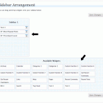
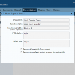

Many of the WordPress plugin authors don’t offer widgets, but only raw PHP functions (or hooks) which you have to insert into the theme’s template files. As the number of functions increases it becomes harder to manage it all, especially if you decide to uninstall some of them or add new ones.
It is especially inconvenient for those who are not so savvy, or don’t want to edit theme files. Moreover, if one decides to change the theme, the edits have to be repeated all over again.
Therefore, I made this Custom Function Widget plugin which allows you to create sidebar widgets without ever touching the theme’s files and use these widgets in any theme you like.
This plugin offers you up to 20 widgets you can then add to your theme’s sidebars. All you have to know is:
- the name of the function, and
- the arguments it requires (if any).
Additionally you can wrap the output in HTML, remove the widget’s title from the output, or remove the default widget wrapper (set in functions.php of your theme).
Download Custom Function Widgets Plugin
Important: It has been tested to be compatible with WordPress 2.5 and 2.6.
Download custom-function-widgets.zip (Version 0.2 / 127 KB) — includes the plugin, readme.txt and four screenshots.
Installation Instructions
- Download the plugin and unzip its content
- Upload all of the
custom_function_widgetsdirectory to/wp-content/plugins/directory. The final directory tree would like/wp-content/plugins/
custom_function_widgets/custom_function_widgets.php 
Activate the plugin through the ‘Plugins’ menu in your WordPress dashboard.- Go to ‘Presentation’ > ‘Widgets’ inside your WordPress dashboard. Just bellow the list of sidebars you will see a list of ‘Available Widgets’. There you will find five new widgets ‘Custom Function 1’, ‘Custom Function 2’, etc.
- Drag one of these widgets inside the sidebar of your choice. Once it is there, click on the widget’s options button (next to its title), which will open the widget’s options dialog box.

There you can specify the following:- Wiget title
- Name of the function you want to call (the only obligatory item you must specify)
- Arguments to pass to the function, like
$onearg = 2, 'Something', $other = 3 - HTML to display before the output of the function
- HTML to display after the output of the function
- Option to hide the title of the widget (which you specified as Widget title) during the ouput
- Option to remove the default wrapper of the widget (defined in
template.phpof your theme’s folder, for each sidebar)
- Close the widget options pop-up and click ‘Save Changes’
- Now you should see the new widget in the sidebar of you blog/site
{kind=link}
{kind=link}
Example: creating a widget for Popularity Contest plugin
To better illustrate where to find this information and how to create a widget, lets use the ‘Popularity Contest‘ plugin by Alex King. Once you install Popularity Contest, you have several PHP hooks available:
akpc_most_popular($limit = 10, $before = <li>, $after = </li>)akpc_most_popular_in_cat($limit = 5, $before, $after, $cat_ID = current category)akpc_most_popular_in_month($limit, $before, $after, $m = YYYYMM)
To use either of these hooks, simply drag an new ‘Custom Function’ widget (from ‘Available Widgets’ under ‘Presentation’ > ‘Widgets’) inside a sidebar of your choice.
Click on the Widget’s options button and enter the following details (for the akpc_most_popular hook as an example):
- Widget title:
Most Popular Posts - Function name:
akpc_most_popular - Function variables:
$limit = 5, $before = <li>, $after = </li> - HTML Before:
<ul> - HTML After:
</ul> - Leave unchecked both
'Remove Widget title from the output'and'Remove the default widget wrapper'options
Once you specify a Widget title, it will be also used in your list of widgets (instead of default ‘Custom Function #’).
What’s next?
There are already other WordPress plugins planned for a public release very soon. On this blog you can already see the Tabbed Widgets plugin which enables you to put any number of other widgets inside a single widget as tabs (with an option to rotate). Tabbed Widgets plugin has been released.
Notes
- I will try to get this plugin submitted at the official WordPress plugin repository, but so far nobody has reviewed my application.
- Please leave your ideas, suggestions and bug reports in the comments.
@Kaspars, I got excited when you talked about your plug-in idea. it sounds really good and useful for dummies as you mentioned above.
One of the features making this plug-in important is not only its usage easiness but also the capability of being able to position any non-widget support plugin at theme’s sidebar.
Make sure Tabbed Widgets Plugin is another useful and lifesaving step in wordpress. To me,most of the wordpress users should use tab menu to organize their sidebars. I’ll be waiting for it.
Thank you Kaspars!
Good time of day.
Can you help me with this plugin?
I test it on my blog, but nothing seems to appear at sidebar.
Can it be problem of WordPress version (i use not last release, just 2.3) or maybe something else?
Test on default wordpress theme with 2 additional standart widgets. They seems to appear, but Custom Function Widget is still hidded.
Thanks for plugin, hope that you can help me and make pluggin even better)
Privet, Tapac
Could you please let me know the name of the plugin for which you are using the CFW? I haven’t tested the plugin with other versions than the latest one, but there shouldn’t be any problems, I think.
Also, did you check that particular widget after you inserted it into the sidebar and saved it? It may show you an error message if the name of function is incorrect.
Privet-privet
Thanks for fast bug-fix, now it work fine.
Good luck in your development and i’ll wait for tabbed-widgets pluggin
Maybe you also interested in one plugin that wraps the Popularity contest of Alex King and brings additional “Most Popular” Widget. I call it W-Popularity. It’s full compatible with Popularity contest.
Shuron, does it have any extra features in comparison to the original Popularity Contest plugin or is it just the widget that you have added?
Great plugins for wordpress.. i hope Tabbed Widget add to download page
i have already done something similar to your tabbed browing, it is already released and many wp users are using it
You can see that here spicyexpress.net, I call that plugin as Accordion, But then your upcoming tabb-widget has very good effect, is that moo.tools there.
regards
daya
Hey, Daya. I did check out your plugin before I made both — CFW and the Tabbed Widgets plugins.
I wanted the ability to use other widgets inside the single tabbed widget, while CFW takes care for plugins which don’t offer widget interface. Thus the combination of both offer more flexibility and increased variety of use.
In addition, Tabbed Widgets make use of the original theme styling (defined at
function.php) for each widget, and it uses the latest version of jQuery which will be supplied with the upcoming WordPress 2.5.But your plugin is currently much useful because it is available public while mine is secret and hidden under the hood :)
i’d like to use this plugin to force the output of a plugin into columns with CSS. i can’t check from work – locked down terminal – but do you think it’d work with something like a recent comment plugin?
Curt, do you mean to apply CSS for the content inside the Admin section? If so, then you’ll have to use a plugin which allows you to append CSS rules to the default WP ones and those set by Baltic Amber themes & schemes plugin (if you are using it).
I don’t know if there any plugins like that, but I made one for my own needs some time ago — called Admin CSS. I have uploaded it for you here: add-admin-css.zip. Unzip, upload, activate and then under ‘Settings’ > ‘Admin CSS’ you can overwrite all admin CSS rules.
Sorry, Curt, I thought this comment was on the Baltic Amber plugin’s page :)
For your problem this plugin (custom function widgets) would help only a little bit, as you would have to write a function that splits those comments into two lists that can be placed as columns using CSS yourself.
And now for a REALLY bone-headed question… I don’t have a clue about programming widgets, but I want to take some regular html and get it into a widget. Specifically, I want to take the code generated by the weather.com website and somehow get it into my sidebar. Sorry for the dummy question, but all I’m doing is a blog while I’m in Iraq and I thought it’d be cool to put the current weather up on my WP… The code is literally like 10 lines, so I thought this would be easy (NOT!)
Thanks.
Sorry, I never did ask my question… Might this CFW widget help me do what I’d like to do?
Are you still planning on releasing the tabbed widgets plugin? It looks cool, I’d like to try it.
Justin, I just sent you an email with the latest version of the tabbed widgets plugin that I am currently using.
I will release it officially (through WordPress Extend) once the documentation is done.
Wow! Thanks a lot, very nice of you.
Are you still planning on releasing the Tabbed Widgets plugin? From the source and the way you described it looks to be a much cleaner implementation than some of the other options out there (which either break the sidebar entirely or still result in hardcoding). I’d definitely be interested in seeing it/using it/contributing if it was available.
shadowstorm, I sent you an email with the plugin attached a few days ago. Any feedback or bug reports are always appreciated.
Interesting but the text widgets allowing php code seem to have the same use or am I bad ?
Li-An, this plugin takes care of situations when the code you would enter in a PHP “text widget” produces an error.
Secondly, having the option to enter raw PHP might be a potential security risk.
I use it for Popularity Contest and a few other plugins and so far I haven’t had the need for raw PHP.
Thank you for your answer. I can understand now the real utilisty of your plugin
Thanks this widget realy great.
How can I use this?
adsensem_ad(‘Test’)
don´t work by my
Function name:
adsensem_ad
Function variables:
‘Test’
THX for Help
Hi Kaspars
I am trying your tabbed widget plugin and like the cocept. The question I have is how can you edit the functions within the widget?
For example, I have a Page widget that allows the exclusion of specific pages. But once selected, you can’t edit. If you have seen the fun with tabbed widgets plugin, it solves those problem, but isn’t nearly as browser friendly.
Do you have a workaround?
Larry
The only way I found to manage the configuration of a widget is to activate it another place than the tabbed thing (it is marked as desactivate in the widged page), make your changes and desactivate it. The changes will be shown in the tabbed thing !
Larry, I don’t really understand what you mean, but if you simply want to customize the widget that you are going to use inside tabbed widget, then create an “invisible” sidebar where you put and configure those widgets before selecting them from the tabbed widget drop-down menu.
Li-An, here is another way how to solve that.
Hey Kaspars, I love your CFW plugin. I installed it on my site. But ran into a problem. When I added a widget into a different sidebar. I lost the settings of CFW widgets in other sidebar. Can you help me with this?
Kian, you cannot use two times the same widget. So, if you use it in a tab, you must leave it “unused” if you want the settings to be kept.
Hi Kaspars,
take a look at this plugin. I think it’s doing the same as your plugin. But the number of widgets is not restricted.
http://www.janek-niefeldt.de/blog/mycustomwidget/
I’m using the feedlist RSS reader as it gives fine control over feed presentation. It seems your plugin cannot handle URL’s containing ‘=’ as it expects a list of parameter=value pairs? how do I solve this?
thanks
“options are available under Presentation > Widgets.”
In wp 2.8.5, I don’t see such, just a numeric selector for how many instances.